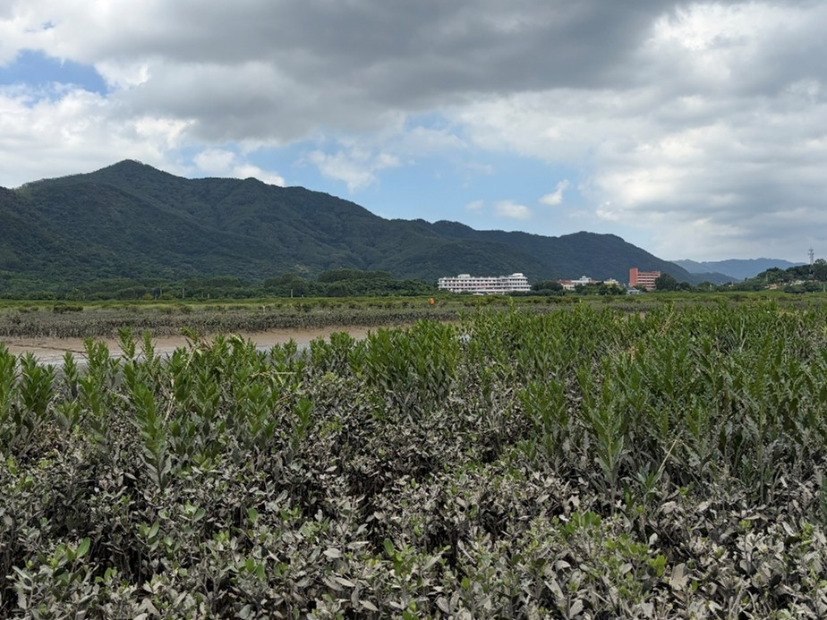
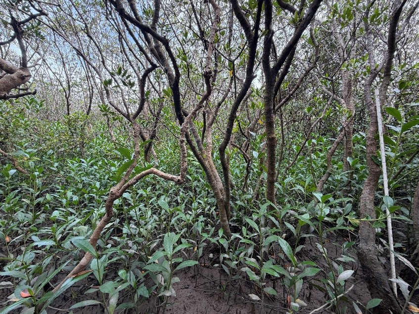

The field investigation of clonal Acanthus in Zhangjiang Estuary
Jiayu together with Yihui, Dan, Muwen, Dekai have finished several field investigations of Acanthus ilicifolius along the Zhangjiang Estuary since April this year, clarifying the distribution and stand formation.
Acanthus ilicifolius exhibits highly plastic leaf spinyness, varying with salinity, inundation or light intensity. Yet, even more striking than the leaf morphological plasticity is its clonal foraging behavior, which reveals a truly outstanding natural history singularity, and might be the key mechanism to clarify its rapid expansion.
In this case, we finished field investigations along the Zhangjiang Estuary four times this year from April to August this year to clarify the distribution and stand formation of this clonal mangrove species.
In open mudflat with high light availability, A. ilicifolius establishes its population from one single seedling to a cluster of several clonal ramets and even a large clonal patch in a few years by clonal growth. In the mangrove understory, they usually anchor and establish near the trees, scrambling over any adjacent vegetation that will provide support whatever life history stages they are experienced.

